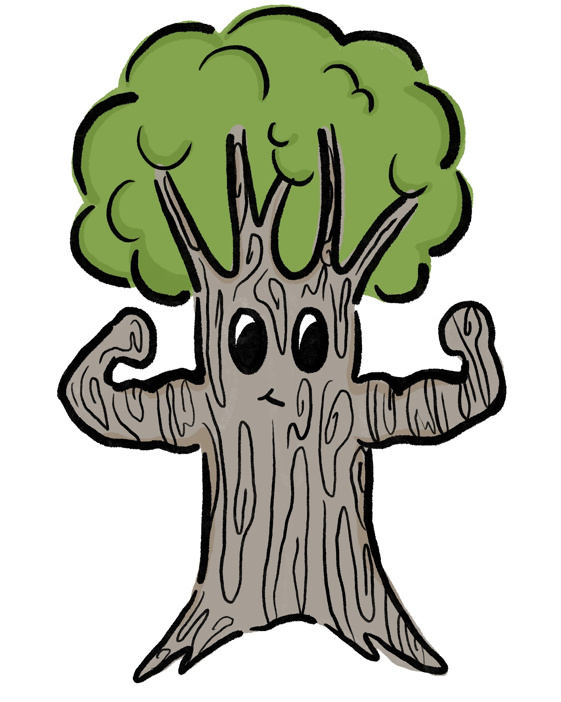

Return
Make sure to tap the image to reveal SuperOak!!!
Quercus Fagaceae (Southern live oak)


SuperOak
PLANT FACTS: The Quercus or Oak tree is abundant on UT campus. Many species can live for centuries, and some can even live up to 1,000 years. As oak trees age, they create distinctive patterns within their trunks, forming rings.
PLANT POWER: SuperOak has the power “memory rings.” Within their rings, they store pieces of environmental information. In the case of a natural disaster such as a forest fire, SuperOak has the ability to restore balance in the ecosystem.